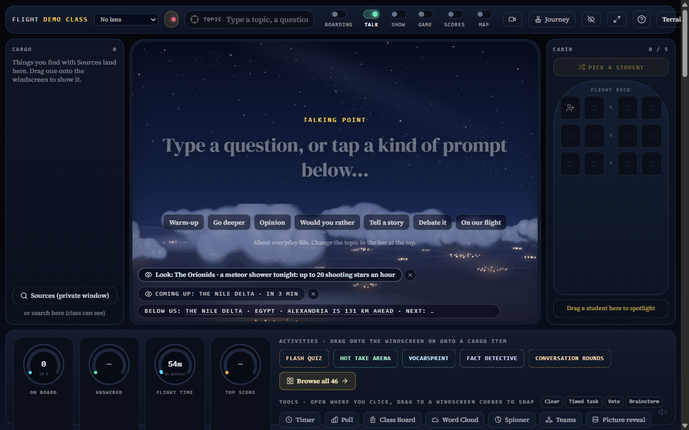

Main: 81e8c672. Terrain on by default. No manual switch. Automatic fallback for failed or slow elevation.
Report and validation limits

Local mock-backed live-room at night. Phone interactions were not validated.